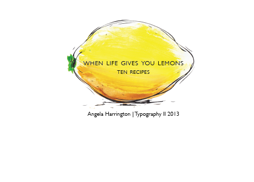

Lentils and Spinach with Lemon
- Preparation 15 min
- Cooking 1 hour
- Servings 6
Ingredients
- 1/2 Pound Lentils
- 1 Cup Sliced Onions
- 1/4 Cup Olive Oil
- 3 Chopped garlic Cloves
- 10 Ounces Frozen Spinach
- 2 Medium Potatoes, Peeled and Sliced
- 1/4 Cup Freshly Squeezed Lemon Juice
Directions
- Wash and pick over the lentils. Place them in a saucepan, and cover them with water until they boil.
Cook them with the cover on for about 20 minutes.
- In a large casserole, brownthe onions in oil, and stir in garlic and coriander.
- Add the spinach and saute` for about 5 to 6 minutes, stir frequently.
- Add potatoes, lentils, and enough lentil cooking liquid to cover.
- Season with salt and pepper, bring to a boil, lower heat, and let simmer for an hour, or until it is thick and soupy.
After, stir in the lemon juice, and serve hot, lukewarm or cold.